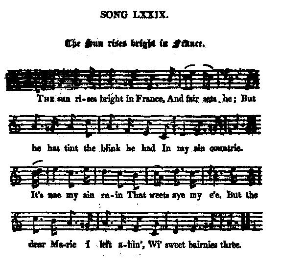

The Sun Rises Bright in France
Le soleil brille en France
Jacobite Exiles
by Allan Cunningham . 1784–1842from Cromek's "Remains of Nithsdale and Galloway song", 1810.
completed by Cunningham's "Songs of Scotland, Volume Iv, 1825
Tune - Mélodie
from Hogg's "Jacobite Relics" 2nd Series N°74 page 157
Arrangement by John Greig "Scots Minstrelsie", 1903
Sequenced by Christian Souchon

|
To the tune:
"It is a sweet old thing, very popular, both in Scotland and England. I got some stanzas from Surtees of Mainsforth. But those printed are from Cromek. It is uncertain to what period the song refers." Hogg in "Jacobite Relics". Cromek writes in a note (page 177) to this song, titled "The Sun's bright in France", contributed by a Miss McCartney: "After ... Culloden, ... some took refuge in foreign countries; and there are many affecting fragments of song which seem to have been the composition of those exiles. As it was treason to sing them, the names of their authors were concealed beyond a possibility of discovery." In spite of these prudent statements to the effect that this be a genuine traditional song, in his "Songs of Scotland", volume IV, published in 1825, Allan Cunningham claims authorship of the poem which he titles "My ain countree, A. Cunningham". The first appearance of the haunting tune, whose composer remains unknown, seems to be in Hogg's "Relics". |
A propos de la mélodie:
"Voici une délicieuse petite chanson, très connue tant en Ecosse qu'en Angleterre. Quelques strophes m'ont été envoyées par Robert Surtees, de Mainsforth (historien 1779 - 1834). Mais je reproduis celles qu'on trouve chez Cromek. Je ne sais pas de quand elles datent." Hogg in "Jacobite Relics". Cromek indique dans une note (page 177) introductive au chant qu'il intitule "The Sun's bright in France" et qu'il dit tenir d'une Miss McCartney: "Après Culloden ... certains trouvèrent refuge à l'étranger; et l'on trouve beaucoup de fragments de chants émouvants qui ont dû être composés par ces exilés. Comme les chanter constituait un délit, on taisait le nom de l'auteur pour qu'il ne soit pas identifié". En dépit de ces affirmations prudentes, ce chant ne serait pas un vrai chant traditionnel: Dans ses "Chants d'Ecosse", volume IV, publiés en 1825, Allan Cunningham s'affirme l'auteur de ce poème qu'il intitule "Ma patrie, A. Cunningham". La première version publiée de la belle mélodie dont l'auteur demeure inconnu, est, semble-t-il, celle de Hogg. |

|
THE SUN'S BRIGHT IN FRANCE
I. The sun rises bright in France, And fair sets he; But he [ has ] tint the [blythe] blink he had In my ain countrie. II. It 's nae my ain ruin That weets aye my e'e, But the dear Marie I left ahin' Wi' sweet bairnies three. III. Fu' [bonnolie] [ bienly ] low'd my ain hearth, And smil'd my ain Marie; O, I've left a' my heart behind In my ain countrie. IV. O I'm leal to high Heaven, [And' it 'll be] [ Which aye was ] leal to me, An' [ it's ] there I'll meet ye a' soon Frae my ain countrie! From "Remains of Nithsdale and Galloway song" Collected by Robert Hartley Cromek, 1810 Hogg's version (1821) is slightly different (brackets, additions in italics). |
MY AIN COUNTREE
1. The sun rises bright in France, And fair sets he; But he has tint the blythe blink he had In my ain countree. 2. O, it's nae my ain ruin That saddens ay my ee, But the love I left in Galloway Wi' bonnie bairns three. 3. The birds wins back tae summertime, The blossom to the tree; But I'll win back, O never, To my ain countree! 1a. O! gladness comes to many But sorrow comes to me As I look o'er the wide ocean To my ain countree. 2a. My hamely hearth burn'd bonnie, And smiled my ain Marie; I've left a' my heart behin' In my ain countree. 3a. O, I am leal to high Heaven, Where soon I hope to be, An' there I'll meet ye a' soon Frae my ain countree! From A. Cunningham's "The Songs of Scotland, Ancient and Modern", 1825. Variants appear in later collections ("bud" instead of "bird", "lonely" instead of "hamely", "bee" instead of "tree"...) |
LE SOLEIL BRILLE EN FRANCE
I. On voit briller le soleil Soir et matin, en France Mais il n'a pas l'éclat vermeil Qu'on lui voit en Ecosse. II. Ce n'est pas que je sois banni Qui me fait de la peine, Mais de t'avoir quittée, O Marie, Et nos trois petits. 3. Voici qu'annoncent les beaux jours Les fleurs, les hirondelles; Mais jamais l'heure du retour Ne sonne à mon oreille. 1a. D'autres ignorent le chagrin. J'ai la peine en partage. Face à l'océan, je cherche en vain Mon pays lointain. III. Un foyer, le mien, éclairait Ton sourire, Marie! Mon cœur au loin s'est attardé. Il reste en ma patrie. IV. Ma foi puisse émouvoir le Ciel Où bientôt, je l'espère,, J'irai vous rejoindre à son appel Au séjour éternel! Traduction: Christian Souchon (c) 2006
|